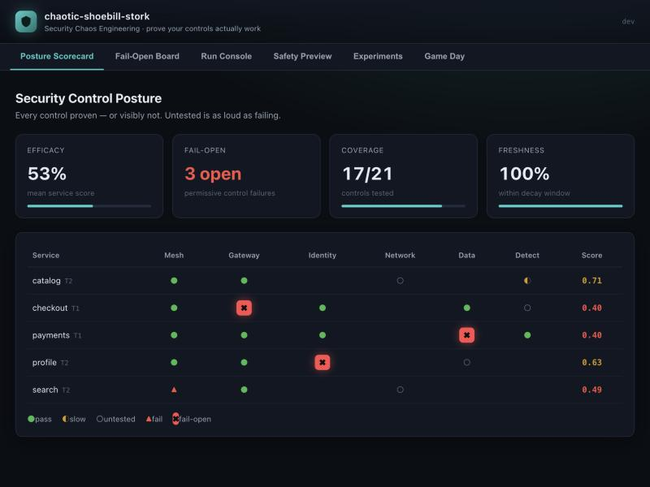
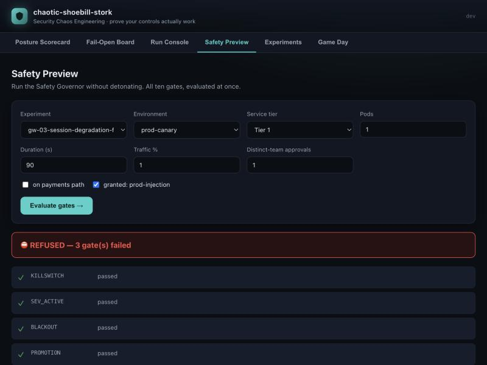
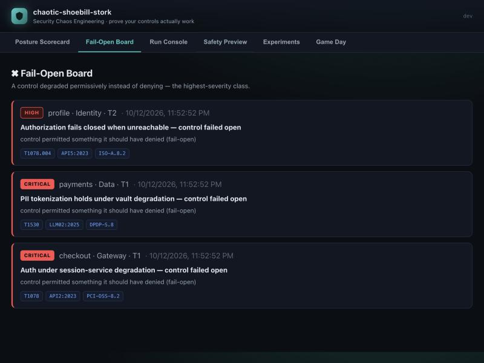

Prove your security controls actually work.
Security Chaos Engineering. Treat every deployed control as a testable hypothesis, safely detonate a bounded, reversible adversarial condition, and assert whether it prevented, detected, alerted, or paged — within an SLO.
Then emit a signed evidence receipt and roll it into a per-service control-efficacy scorecard. Not a red-team tool. No exploits.
You deployed the control. But does it work?
Most teams learn the honest answer in one of two places: at 3am, mid-incident, when the alert that should have fired never did — or once a year, in an audit, long after it mattered.
- The WAF rule was disabled in a refactor six months ago. Nobody noticed, because nothing ever tested it.
- Authorization "fails open" when the identity service is unreachable — the single worst failure mode, discovered during the outage.
- The alert fires, but no page reaches a human within the SLO — and the runbook link 404s.
- The only open-source tool that tackled this, ChaoSlingr, was archived in 2019. The tools that solve it — SafeBreach, AttackIQ, Picus, Cymulate — are closed and commercial.
What is Security Chaos Engineering?
It's a lesser-known practice, so here's the short version — the idea that you earn confidence in a system not by hoping, but by safely breaking it on purpose and watching whether it holds.
Pioneered at Netflix with "Chaos Monkey," which killed servers in production on purpose. The counter-intuitive insight: you don't build confidence that a system is resilient by assuming it — you inject controlled failure and verify the system withstands it. A fire drill for your infrastructure. It's now a mainstream reliability practice (CNCF's LitmusChaos & Chaos Mesh, AWS Fault Injection Service, Gremlin).
Apply that exact method to your security controls instead of your availability. Coined by Aaron Rinehart; popularized in the O'Reilly book Security Chaos Engineering (Shortridge & Rinehart, 2023). A firewall rule, an authorization policy, a detection alert, a tokenization step — each is a hypothesis ("this will block / detect / alert on that bad thing"). The only way to know it still holds is to safely reproduce the bad thing and watch. SCE replaces assumption with evidence.
Reliability chaos has mature platforms; security chaos has almost none in the open — the one early attempt (AWS's ChaoSlingr) was archived in 2019, and the tools that do it (SafeBreach, AttackIQ, Picus, Cymulate) are closed and expensive. shoebill is the clean-room, Apache-2.0 platform built for exactly this — with the safety rails and signed evidence that make it trustworthy enough to actually run.
One disciplined loop, seven steps.
Every run follows the same path. The Safety Governor is the only door to injection — nothing detonates without its signed Decision{Allowed:true}, and every step is written to a signed ledger.
HYPOTHESIZE
Declare the control, its steady state, and the SLO it must meet — as data, not a payload.
GATE
The Safety Governor evaluates all 10 gates. One fails → the run is refused.
ARM
Mint a per-run, capability-scoped, time-boxed, signed credential. It never outlives the run.
DETONATE
Inject one pre-declared, bounded, reversible adversarial condition. Tagged with a correlation UUID.
OBSERVE
Collect signals across the response ladder: prevented, detected, alerted, paged.
REVERT
Undo the condition and independently verify the revert. No revert → the Governor never allowed it.
ADJUDICATE
Score each rung within SLO, write a signed receipt, update the scorecard. Never lies.
Nine experiment families, mapped to the frameworks.
From the service mesh to agentic AI — each family is a catalog of declared hypotheses, cross-walked to MITRE ATT&CK, OWASP, PCI-DSS, ISO 27001, NIST 800-53, SOC 2 and DPDP.
Service Mesh
mTLS downgrade refusal, zero-trust between workloads.
Gateway & Edge
Rate limits, WAF signatures, JWT validation, tenant isolation, bypass refusal.
Identity & Secrets
Fail-closed authz, revocation TTLs, rotation, leaked-credential canaries.
Network & Perimeter
Segmentation, allowlist drift, direct-to-service reachability.
Data Protection
Tokenization, redaction, canary-token boundaries. Fingerprinted canaries only — never real PII.
Supply Chain
Artifact provenance, signature verification, build integrity.
DR & Resilience
Posture survives failover; degradation never widens access.
Detection & Response
Rule regression, alert-to-page paths, runbook executability, pipeline integrity.
AI / Agentic
LLM & agent guardrails — OWASP LLM 2025, Agentic ASI 2026, AISVS.
Six screens. One honest picture of your posture.
A built-in operator UI turns every run into something you can read at a glance — and something an auditor can verify without trusting the UI at all.

Posture Scorecard
Every control proven — or visibly not. Untested scores 0.0, as loud as failing.

Safety Preview
Run the Safety Governor without detonating. All ten gates, evaluated at once.

Fail-Open Board
Controls that degraded permissively instead of denying — the highest-severity class.
Designed to be trusted, not just run.
Five commitments make this more than "chaos for security" — they make the results something you can take to an incident review, or an auditor.
The only door to injection — 10 gates, all evaluated.
Nothing in the codebase dispatches a detonator without a Governor decision. Every gate is evaluated (never short-circuited), production injection is off by default, and no run can widen its own scope. If an action can't be reverted and the revert independently verified, the Governor refuses it.
An unobservable result is never a pass.
FAIL_OPEN is its own verdict — the worst one. INCONCLUSIVE never becomes PASS. An expected-but-untested control scores 0.0: untested is not unknown.
A correlation UUID in every artifact.
The same UUID is woven through the injection, the signals, and the receipt — so a chaos run can never be mistaken for a real incident, and a "pass" can never be a coincidence.
Ed25519-signed receipts an auditor can check.
Every decision, approval, detonation and verdict lands in an append-only, signed ledger — tamper-, reorder- and truncation-evident, and verifiable without trusting this platform's UI or database.
Offline, deterministic, on your laptop.
The whole loop runs with zero external dependencies. shoebill demo replays a full posture end-to-end — no cloud, no account, no network.
Up and running in three commands.
Install the shoebill binary, replay the demo posture, then open the operator console locally. Nothing leaves your machine.
- Single static Go binary, no runtime dependencies.
- Deterministic demo data — safe to run anywhere.
- Console serves at http://127.0.0.1:8099.
$ go install github.com/dibakshya01/chaotic-shoebill-stork/cmd/shoebill@latest
$ shoebill demo
$ shoebill serve --demo # open http://127.0.0.1:8099Mapped to the standards that matter.
Each experiment is cross-walked to the control frameworks your auditors and your security team already live in — so a passing run is also a piece of evidence.
Stop assuming. Start proving.
Clone it, run the demo, and see your first control-efficacy scorecard in under a minute — entirely offline.